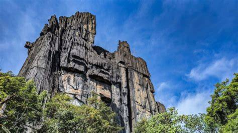
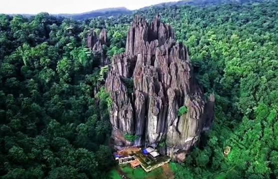
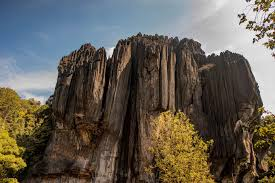
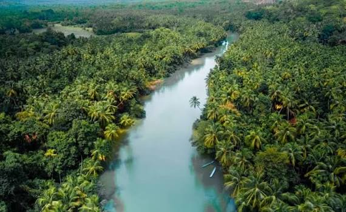

Where to go

Yana Caves
Introduction
The gigantic crystalline-like rock formations of Yana stand proud among the evergreen forests of the Western Ghats in Uttara Kannada District. Yana is an ideal destination for pilgrims, trekkers, and nature-lovers seeking a blend of geological wonders and ancient mythology.
Brief History
Geological studies show that Yana's black limestone formations were created through millions of years of chemical weathering and soil erosion, isolating these hard karst monoliths from the surrounding terrain. Local tradition explains their existence through Hindu mythology involving the demon king Bhasmasura. Granted a boon by Lord Shiva that allowed him to reduce anyone to ash by placing his hand on their head, Bhasmasura turned the power back against Shiva. Lord Vishnu intervened by adopting the form of Mohini and tricking the demon into performing a ritual dance step where he placed his hand on his own head. According to local lore, the intense heat generated during Bhasmasura's destruction scorched the surrounding rock faces, leaving them permanently black.
Fun Facts
•The surrounding bio-rich forest ecosystem hosts numerous species of wild honeybees whose nests coat the rock faces.
•A naturally formed cave underneath the Bhairaveshwara peak houses a self-manifested (Swayambhu) Shiva Linga.
•Despite the humid tropical climate of the surrounding Western Ghats, the interior of the Bhairaveshwara cave maintains a naturally cool temperature year-round
How To Reach
By Train: Kumta Railway Station (~30 km) and Sirsi (~40 km) are the closest well-connected railheads.
By Road/Air: By Road: Accessible via NH-66 and state highways; visitors park near the base and complete a 1.5 km to 2 km walk to the rock foot.
Entry fee and timings
•Timings: 6:00 AM – 6:00 PM (Daily)
•Adult Entry Fee: Free
•Children Entry Fee: Free
•Vehicle Parking Charges: ₹20 (Two-wheelers) | ₹50 (Four-wheelers)
Places to stay
Things To Keep In Mind
•Wear sturdy, slip-resistant walking or trekking shoes as forest paths and cave interiors can be damp.
•Carry your own drinking water and light snacks, as commercial stalls inside the forest area are restricted.
•Monsoons (June–September) offer lush green views but make stone steps slippery; October to March offers ideal weather.
•Respect local ecological guidelines and refrain from littering plastics in the forest ecosystem.



Phone no:
+91 9325615694
+91 9325615696
Email Information:
chikkukunjappan@gmail.com
mimagrace@gmail.com
Address
Department of Tourism 5th Floor, Indhana Bhavan, Race Course Road, Bengaluru-560 009, Karnataka, India